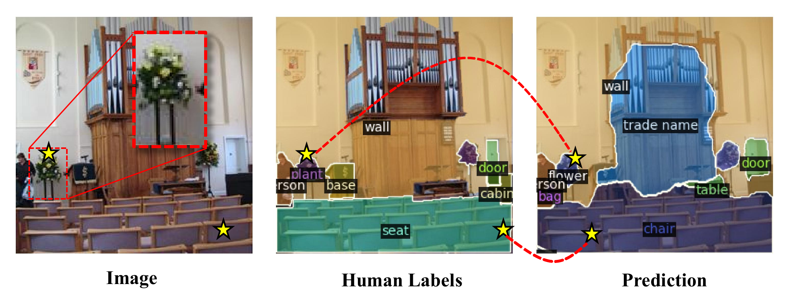
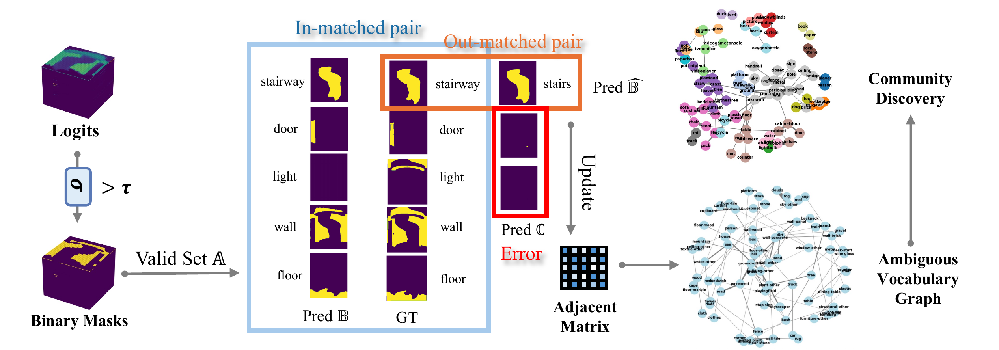

<!DOCTYPE html>
<html>
<head>
  <meta charset="utf-8">
  <!-- Meta tags for social media banners, these should be filled in appropriatly as they are your "business card" -->
  <!-- Replace the content tag with appropriate information -->
  <meta name="description" content="DESCRIPTION META TAG">
  <meta property="og:title" content="SOCIAL MEDIA TITLE TAG"/>
  <meta property="og:description" content="SOCIAL MEDIA DESCRIPTION TAG TAG"/>
  <meta property="og:url" content="URL OF THE WEBSITE"/>
  <!-- Path to banner image, should be in the path listed below. Optimal dimenssions are 1200X630-->
  <meta property="og:image" content="static/image/your_banner_image.png" />
  <meta property="og:image:width" content="1200"/>
  <meta property="og:image:height" content="630"/>


  <meta name="twitter:title" content="TWITTER BANNER TITLE META TAG">
  <meta name="twitter:description" content="TWITTER BANNER DESCRIPTION META TAG">
  <!-- Path to banner image, should be in the path listed below. Optimal dimenssions are 1200X600-->
  <meta name="twitter:image" content="static/images/your_twitter_banner_image.png">
  <meta name="twitter:card" content="summary_large_image">
  <!-- Keywords for your paper to be indexed by-->
  <meta name="keywords" content="KEYWORDS SHOULD BE PLACED HERE">
  <meta name="viewport" content="width=device-width, initial-scale=1">


  <title>Academic Project Page</title>
  <link rel="icon" type="image/x-icon" href="">
  <link href="https://fonts.googleapis.com/css?family=Google+Sans|Noto+Sans|Castoro"
  rel="stylesheet">

  <link rel="stylesheet" href="static/css/bulma.min.css">
  <link rel="stylesheet" href="static/css/bulma-carousel.min.css">
  <link rel="stylesheet" href="static/css/bulma-slider.min.css">
  <link rel="stylesheet" href="static/css/fontawesome.all.min.css">
  <link rel="stylesheet"
  href="https://cdn.jsdelivr.net/gh/jpswalsh/academicons@1/css/academicons.min.css">
  <link rel="stylesheet" href="static/css/index.css">

  <script src="https://ajax.googleapis.com/ajax/libs/jquery/3.5.1/jquery.min.js"></script>
  <script src="https://documentcloud.adobe.com/view-sdk/main.js"></script>
  <script defer src="static/js/fontawesome.all.min.js"></script>
  <script src="static/js/bulma-carousel.min.js"></script>
  <script src="static/js/bulma-slider.min.js"></script>
  <script src="static/js/index.js"></script>
</head>
<body>


  <section class="hero">
    <div class="hero-body">
      <div class="container is-max-desktop">
        <div class="columns is-centered">
          <div class="column has-text-centered">
            <h1 class="title is-1 publication-title">Revisit the Open Nature of <br> Open Vocabulary Semantic Segmentation</h1>
            <!-- <h1 class="title is-3 publication-title">(Under Construction)</h1> -->
            <div class="is-size-5 publication-authors">
              <!-- Paper authors -->
              <span class="author-block">
                <a href="https://scholar.google.com/citations?user=hv9vhhAAAAAJ&hl=en" target="_blank">Qiming Huang</a>,</span>
                <span class="author-block">
                  <a href="SECOND AUTHOR PERSONAL LINK" target="_blank">Han Hu</a>,</span>
                  <span class="author-block">
                    <a href="https://jianbojiao.com/" target="_blank">Jianbo Jiao</a>
                  </span>
                  </div>
                  
                  <div class="is-size-5 publication-authors">
                    <span class="author-block"><a href="https://mix.jianbojiao.com/">The MIx Group</a>, University of Birmingham</span>
                    <br><span class="author-block"><a href="https://iclr.cc/virtual/2025/poster/31104">ICLR 2025</a></span>
                    <!-- <span class="eql-cntrb"><small><br><sup>*</sup>Indicates Equal Contribution</small></span> -->
                  </div>

                  <div class="column has-text-centered">
                    <div class="publication-links">
                         <!-- Arxiv PDF link -->
                      <span class="link-block">
                        <a href="https://openreview.net/pdf?id=2vHIHrJAcI" target="_blank"
                        class="external-link button is-normal is-rounded is-dark">
                        <span class="icon">
                          <i class="fas fa-file-pdf"></i>
                        </span>
                        <span>Paper</span>
                      </a>
                    </span>

                    <!-- Supplementary PDF link -->
                    <!-- <span class="link-block">
                      <a href="static/pdfs/supplementary_material.pdf" target="_blank"
                      class="external-link button is-normal is-rounded is-dark">
                      <span class="icon">
                        <i class="fas fa-file-pdf"></i>
                      </span>
                      <span>Supplementary</span>
                    </a>
                  </span> -->

                  <!-- Github link -->
                  <span class="link-block">
                    <a href="https://github.com/YOUR REPO HERE" target="_blank"
                    class="external-link button is-normal is-rounded is-dark">
                    <span class="icon">
                      <i class="fab fa-github"></i>
                    </span>
                    <span>Code</span>
                  </a>
                </span>

                <!-- ArXiv abstract Link -->
                <span class="link-block">
                  <a href="https://openreview.net/pdf?id=2vHIHrJAcI" target="_blank"
                  class="external-link button is-normal is-rounded is-dark">
                  <span class="icon">
                    <i class="ai ai-arxiv"></i>
                  </span>
                  <span>arXiv</span>
                </a>
              </span>
            </div>
          </div>
        </div>
      </div>
    </div>
  </div>
</section>


<!-- Teaser video-->
<!-- End teaser video -->

<!-- <div style="display: flex; flex-direction: column; justify-content: center; align-items: center; height: 100vh; margin: 0 !important; padding: 0; font-family: Arial, sans-serif; text-align: center;">
  
  <div style="margin: 0; padding: 0; font-size: 18px; color: #555;">这是一张示例图片的说明</div>
</div> -->


<div style="max-width: 60%; margin: auto; padding: 10px; font-size: 14px; color: #555; text-align: center;">
  <p style="margin: 0;">Category ambiguity in open vocabulary semantic segmentation. One object can be assigned multiple possible labels while the human label is only one of them. For example, the area on
    the left with a yellow star was annotated as ‘‘plant’’ by humans, but predicted to be ‘‘flower’’ by the
    OVS model; the bottom part annotated as ‘‘seat’’ was predicted as ‘‘chair’’ by open-vocabulary semantic segmentation models.</p>
</div>


<!-- Paper abstract -->
<section class="section hero is-light">
  <div class="container is-max-desktop">
    <div class="columns is-centered has-text-centered">
      <div class="column is-four-fifths">
        <h2 class="title is-3">Abstract</h2>
        <div class="content has-text-justified">
          <p>
            In Open Vocabulary Semantic Segmentation (OVS), we observe a consistent drop in model performance as the query vocabulary set expands, especially when it includes semantically similar and ambiguous vocabularies, such as ‘sofa’ and ‘couch’. The previous OVS evaluation protocol, however, does not account for such ambiguity, as any mismatch between model-predicted and human-annotated pairs is simply treated as incorrect on a pixel-wise basis. This contradicts the open nature of OVS, where ambiguous categories may both be correct from an open-world perspective. 
          </p>
          <p>
            To address this, in this work, we study the open nature of OVS and propose a mask-wise evaluation protocol that is based on matched and mismatched mask pairs between prediction and annotation respectively. Extensive experimental evaluations show that the proposed mask-wise protocol provides a more effective and reliable evaluation framework for OVS models compared to the previous pixel-wise approach on the perspective of the open world. Moreover, analysis of mismatched mask pairs reveals that a large number of ambiguous categories exist in commonly used OVS datasets. 
          </p>
          <p>
            Interestingly, we find that reducing these ambiguities during both training and inference enhances the capabilities of OVS models. These findings and the new evaluation protocol encourage further exploration of the open nature of OVS, as well as broader open-world challenges.
          </p>
        </div>
      </div>
    </div>
  </div>
</section>
<!-- End paper abstract -->

<section class="section hero">
  <div class="container is-max-desktop">
    <div class="columns is-centered has-text-centered">
      <div class="column is-four-fifths">
        <h2 class="title is-3">The proposed mask-wise evaluation protocol</h2>
                
        <div class="content has-text-justified">
          <!-- <p>
            Unlike traditional pixel-wise evaluation, which selects only the highest-probability class per pixel, 
            our method retains multiple reasonable class predictions by applying a threshold to the model logits. 
            We evaluate these masks by defining three relationships: <em>in-matched pairs</em>, <em>out-matched pairs</em>, 
            and <em>errors</em>, aligning predicted masks with ground truth (GT) masks. Furthermore, we leverage out-matched 
            pairs to construct an ambiguous vocabulary graph, facilitating community discovery analysis to assess the model's 
            open-set prediction capabilities.
        </p> -->
        </div>
      </div>
    </div>
  </div>

<div style="text-align: left; font-size: 16px; max-width: 800px; margin: auto; padding-top: 10px;">
    <p>Our method differs from traditional pixel-wise evaluation by retaining multiple reasonable class predictions based on a threshold, rather than selecting only the highest-probability class per pixel. We introduce three types of match relationships for evaluation:</p>
    <br>
    <ul>
        <li>
            <strong>In-Match Pair:</strong> The predicted class aligns exactly with the ground truth (GT) class, and their mask regions overlap.
        </li>
        <li>
            <strong>Out-Match Pair:</strong> The predicted class does not match the ground truth class, but their mask overlap exceeds a predefined high threshold. This indicates a possible synonym or semantically similar prediction rather than an actual model error.
        </li>
        <li>
            <strong>Error:</strong> The predicted class does not match the ground truth class, and the mask overlap is below the predefined threshold. This is considered an incorrect prediction by the model.
        </li>
    </ul>
    <br>
    <p>We further utilize out-matched pairs to construct an <strong>ambiguous vocabulary graph</strong> and perform <strong>community discovery</strong> analysis to better understand the model’s open-set prediction capabilities.</p>
</div>  
</section>


<section class="section hero">
  <div class="container is-max-desktop">
    <div class="columns is-centered has-text-centered">
      <div class="column is-four-fifths">
        <h2 class="title is-3">Re-benchmarking Results</h2>
        <!--          -->
        <div class="content has-text-justified">
        </div>
      </div>
    </div>
  </div>

<div style="text-align: center; font-size: 16px; max-width: 1000px; margin: auto;">
  <p><strong>Table 1:</strong> Quantitative results of our proposed mask-wise evaluation protocol. The symbol ★ indicates using a joint-dataset vocabulary set during testing. NULL denotes non-out-matched mask is predicted. Results of the conventional argmax pixel-wise approach are shown in the first four rows.</p>

  <table border="1" cellspacing="0" cellpadding="5" style="border-collapse: collapse; width: 100%; text-align: center;">
      <tr>
          <th>Method</th>
          <th>Venue</th>
          <th colspan="3">PC59</th>
          <th colspan="3">ADE150</th>
          <th colspan="3">PC459</th>
          <th colspan="3">ADE847</th>
      </tr>
      <tr>
          <td></td>
          <td></td>
          <td style="background-color: #ECF4FF;">front↑</td>
          <td style="background-color: #ECF4FF;">back↑</td>
          <td style="background-color: #F5D6D6;">err↓</td>
          <td style="background-color: #ECF4FF;">front↑</td>
          <td style="background-color: #ECF4FF;">back↑</td>
          <td style="background-color: #F5D6D6;">err↓</td>
          <td style="background-color: #ECF4FF;">front↑</td>
          <td style="background-color: #ECF4FF;">back↑</td>
          <td style="background-color: #F5D6D6;">err↓</td>
          <td style="background-color: #ECF4FF;">front↑</td>
          <td style="background-color: #ECF4FF;">back↑</td>
          <td style="background-color: #F5D6D6;">err↓</td>
      </tr>
      <tr>
          <td>SAN</td>
          <td>CVPR'23</td>
          <td colspan="3">57.70</td>
          <td colspan="3">32.10</td>
          <td colspan="3">15.70</td>
          <td colspan="3">12.40</td>
      </tr>
      <tr>
          <td>CAT-Seg</td>
          <td>CVPR'24</td>
          <td colspan="3">63.30</td>
          <td colspan="3">37.90</td>
          <td colspan="3">23.80</td>
          <td colspan="3">16.00</td>
      </tr>
      <tr>
          <td>SED</td>
          <td>CVPR'24</td>
          <td colspan="3">60.90</td>
          <td colspan="3">35.30</td>
          <td colspan="3">22.10</td>
          <td colspan="3">13.70</td>
      </tr>
      <tr>
          <td>MAFT+</td>
          <td>ECCV'24</td>
          <td colspan="3">59.40</td>
          <td colspan="3">36.10</td>
          <td colspan="3">21.60</td>
          <td colspan="3">15.10</td>
      </tr>
      <tr>
          <td>SAN</td>
          <td>CVPR'23</td>
          <td>65.91</td>
          <td>93.75</td>
          <td>9.99</td>
          <td>42.89</td>
          <td>93.12</td>
          <td>8.56</td>
          <td>27.65</td>
          <td>70.87</td>
          <td>6.67</td>
          <td>22.84</td>
          <td>92.46</td>
          <td>8.41</td>
      </tr>
      <tr>
          <td>CAT-Seg</td>
          <td>CVPR'24</td>
          <td>68.46</td>
          <td>94.24</td>
          <td>NULL</td>
          <td>45.74</td>
          <td>94.61</td>
          <td>5.53</td>
          <td>30.95</td>
          <td>68.96</td>
          <td>3.86</td>
          <td>26.39</td>
          <td>93.66</td>
          <td>5.20</td>
      </tr>
      <tr>
          <td>SED</td>
          <td>CVPR'24</td>
          <td>66.29</td>
          <td>94.21</td>
          <td>6.43</td>
          <td>44.90</td>
          <td>93.50</td>
          <td>5.20</td>
          <td>31.41</td>
          <td>70.72</td>
          <td>4.93</td>
          <td>26.99</td>
          <td>92.61</td>
          <td>5.07</td>
      </tr>
      <tr>
          <td>MAFT+</td>
          <td>ECCV'24</td>
          <td>64.95</td>
          <td>93.57</td>
          <td>9.10</td>
          <td>46.51</td>
          <td>93.10</td>
          <td>7.31</td>
          <td>31.89</td>
          <td>70.82</td>
          <td>7.12</td>
          <td>28.72</td>
          <td>92.15</td>
          <td>7.84</td>
      </tr>
  </table>
</div>


<section class="section hero">
  <div class="container is-max-desktop">
    <div class="columns is-centered has-text-centered">
      <div class="column is-four-fifths">
        <h2 class="title is-3">Visualization of the ambiguous vocabulary graph</h2>
                
        <div class="content has-text-justified" style="padding-top: 10px;">
        <strong><p>
          (a) A community extracted from the COCO-Stuff171 dataset (showing only 50 classes).
          (b) Example images from the same community, where images from the same vocabulary community
          exhibit visually similar semantics (best viewed in colour)
        </p></strong>
        </div>
      </div>
    </div>
  </div>

  <div style="text-align: left; font-size: 16px; max-width: 800px; margin: auto; padding-top: 10px;">
    <p>Using community discovery methods, we can partition the ambiguous graph into communities as
      shown in (a). Each community represents a cluster of classes that are often confused with
      each other. For example, in an object detection or segmentation dataset, we might observe that the
      categories “sofa”, “couch”, and “armchair” form a tightly connected community, indicating that
      these classes are frequently misclassified or confused by the model.</p>
    <br>

    <p>
      This insight suggests that the dataset may contain ambiguous annotations where these objects are 
      not clearly distinguishable or where multiple terms are used interchangeably in different regions or 
      contexts. By visualising the labels of the same community, as shown in (b), we find that these labels are extremely similar visually and difficult to distinguish through subtle visual differences. From a human perspective, these labels are likely to be classified as the same thing, showing
      extremely high similarity, which may indicate that they share some core features or attributes.
    </p>
  </div>      


<!-- Image carousel -->
<!-- <section class="hero is-small">
  <div class="hero-body">
    <div class="container">
      <div id="results-carousel" class="carousel results-carousel">
       <div class="item">
        
        <h2 class="subtitle has-text-centered">
          First image description.
        </h2>
      </div>
      <div class="item">
        
        <h2 class="subtitle has-text-centered">
          Second image description.
        </h2>
      </div>
     <div class="item">
      
      <h2 class="subtitle has-text-centered">
        Fourth image description.
      </h2>
    </div>
  </div>
</div>
</div>
</section> -->


<!-- End image carousel -->


<!-- Youtube video -->

<!-- End youtube video -->


<!-- Video carousel -->

<!-- End video carousel -->


<!-- Paper poster -->
<!-- <section class="hero is-small is-light">
  <div class="hero-body">
    <div class="container">
      <h2 class="title">Poster</h2>

      <iframe  src="static/pdfs/sample.pdf" width="100%" height="550">
          </iframe>
        
      </div>
    </div>
  </section> -->
<!--End paper poster -->


<!--BibTex citation -->
  <section class="section" id="BibTeX">
    <div class="container is-max-desktop content">
      <h2 class="title">BibTeX</h2>
      <pre><code>@inproceedings{huangrevisit,
        title={Revisit the open nature of open vocabulary segmentation},
        author={Huang, Qiming and Hu, Han and Jiao, Jianbo},
        booktitle={The Thirteenth International Conference on Learning Representations}}</code></pre>
    </div>
</section>
<!--End BibTex citation -->


  <footer class="footer">
  <div class="container">
    <div class="columns is-centered">
      <div class="column is-8">
        <div class="content">

          <p>
            This page was built using the <a href="https://github.com/eliahuhorwitz/Academic-project-page-template" target="_blank">Academic Project Page Template</a> which was adopted from the <a href="https://nerfies.github.io" target="_blank">Nerfies</a> project page.
          </p>

        </div>
      </div>
    </div>
  </div>
</footer>

<!-- Statcounter tracking code -->
  
<!-- You can add a tracker to track page visits by creating an account at statcounter.com -->

    <!-- End of Statcounter Code -->

  </body>
  </html>